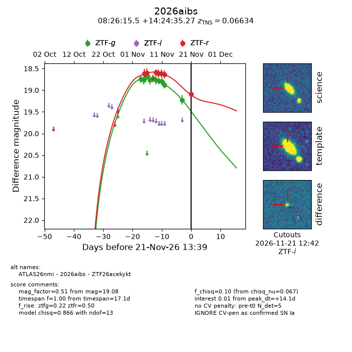
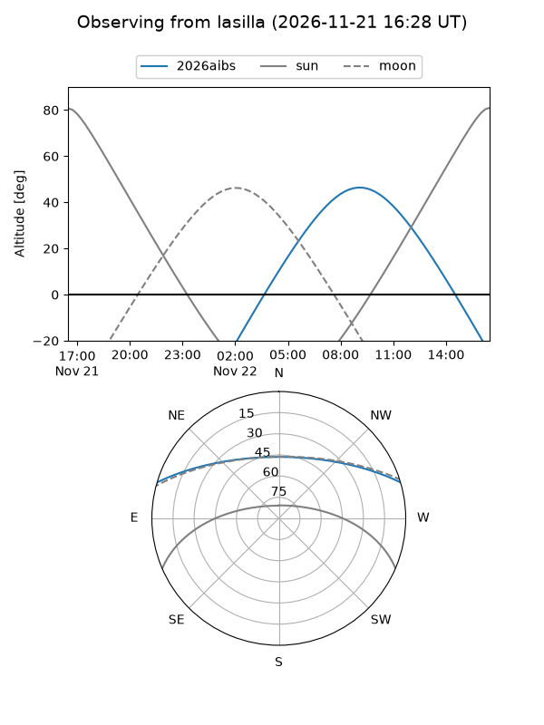
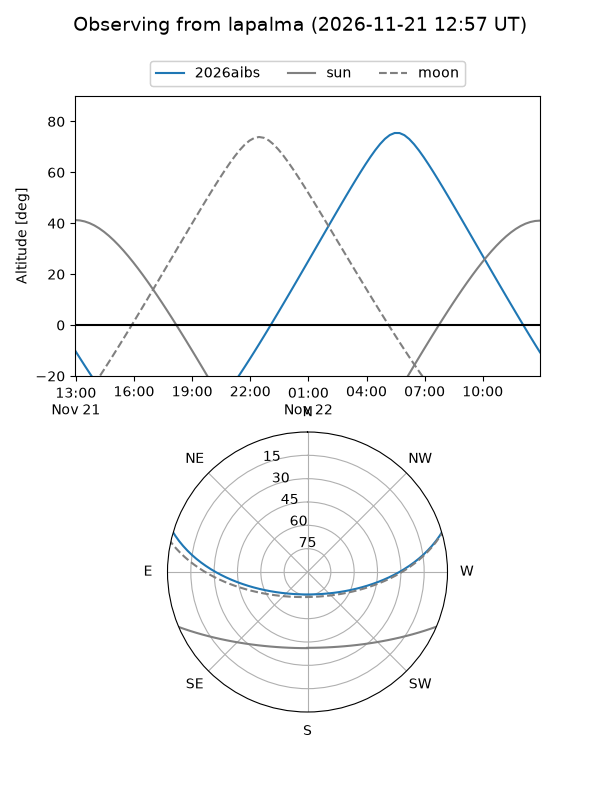
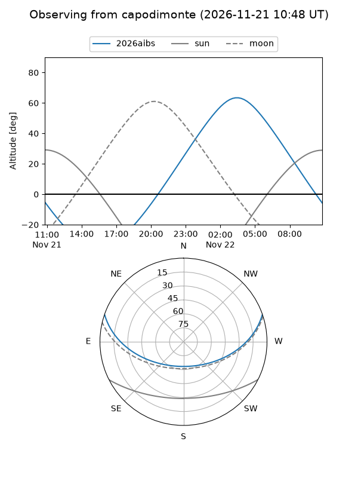
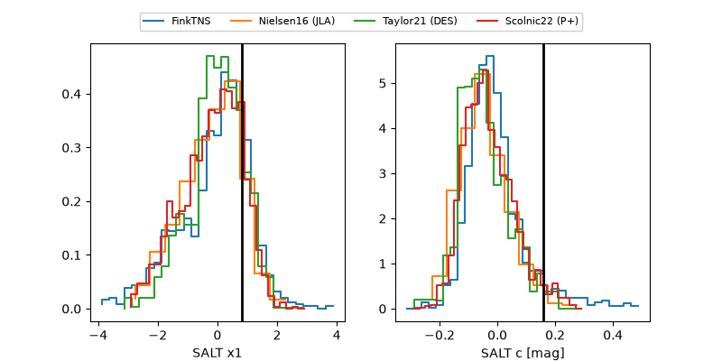

2026aibs
Target 2026aibs at 2026-11-21 13:40
Aliases and brokers:
FINK-ZTF: ztf.fink-portal.org/ZTF26acekykt
Lasair-ZTF: lasair-ztf.lsst.ac.uk/objects/ZTF26acekykt
ALeRCE-ZTF: alerce.online/object/ZTF26acekykt
YSE-PZ: ziggy.ucolick.org/yse/transient_detail/2026aibs
TNS name: wis-tns.org/object/2026aibs
Direct TNS query: direct search
alt names
ZTF26acekykt (ztf,fink_ztf)
2026aibs (tns,yse)
ATLAS26nmi (atlas)
Coordinates:
equatorial (ra, dec) = 126.5646,+14.40980
equatorial (HMS+DMS) = 08:26:15.50,+14:24:35.27
galactic (l, b) = (210.0962,+27.38836)
Flags:
TNS type: SN Ia
TNS redshift: 0.0663
peak dt: +14.1
Photometry:
last ztfg=19.23, ztfr=19.08
10 ztfg, 7 ztfr detections
Lightcurve

Visibility



Additional plots
